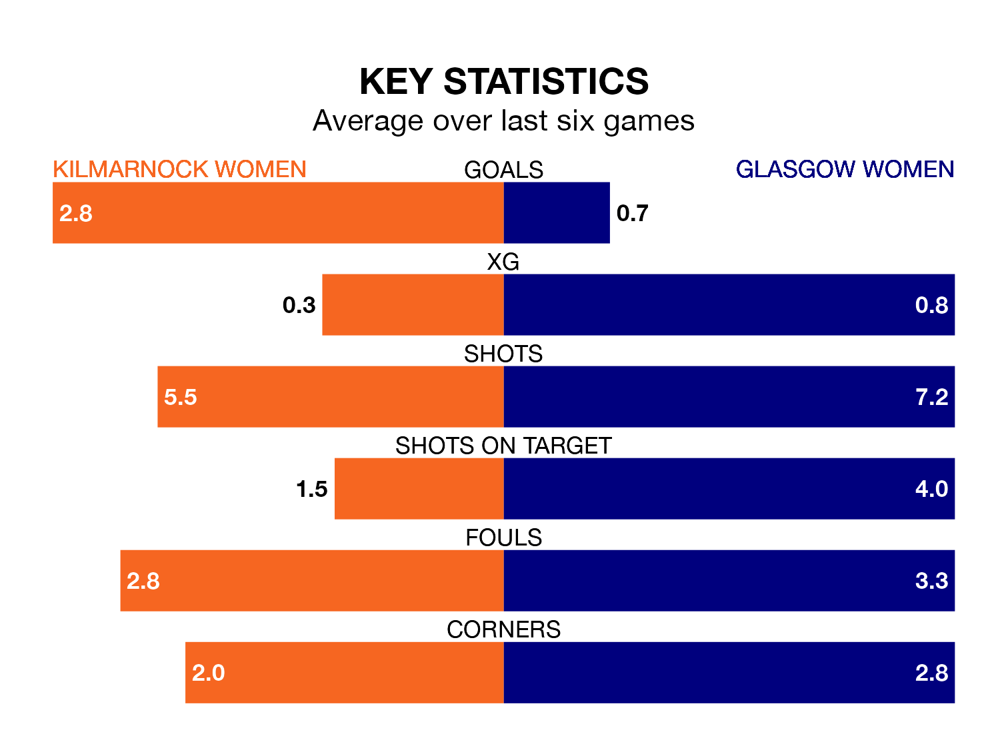

Relegation candidates Glasgow Women face a challenge away against high-flying Kilmarnock Women at the BBSP Stadium Rugby Park on Sunday.
Glasgow Women are seventh in the SWPL 2 table, and have picked up four wins and eight draws in their 22 games to date.
Kilmarnock, meanwhile, are second in the standings with 41 points, having won 12 and drawn five, and are 15 points behind table-toppers Queen's Park Women.
With 20 goals in 22 games so far this season, Glasgow are the league's second-lowest scorers with 0.9 goals per game. And they are conceding more than average, letting in 42 goals at a rate of 1.9 per game.
Kilmarnock, meanwhile, are above average scorers, with 2.5 goals per game, compared to a league average of 1.8. They have conceded 1.3 goals per game.
The home team are in reasonable form in SWPL 2, with three wins and two draws from their last six games.
With no wins and three draws over that period, the visitors' form is much worse – they have taken three points from 18, compared to Kilmarnock's 11.
In the last 10 years, Kilmarnock and Glasgow have played each other on nine occasions. Kilmarnock won three of them, Glasgow two, and they drew four times.
On average, Kilmarnock scored 1.8 goals and Glasgow 1.7 in those matches.
Their last meeting was on February 11, when Kilmarnock won 3-2 away.
Kilmarnock's last match was on March 31, a 1-1 draw against Livingston Women, with getting the goal for Kilmarnock.
Glasgow drew 0-0 with Boroughmuir Thistle last time out, also on March 31.
Updated: 16:41 (UTC), 04/04/24